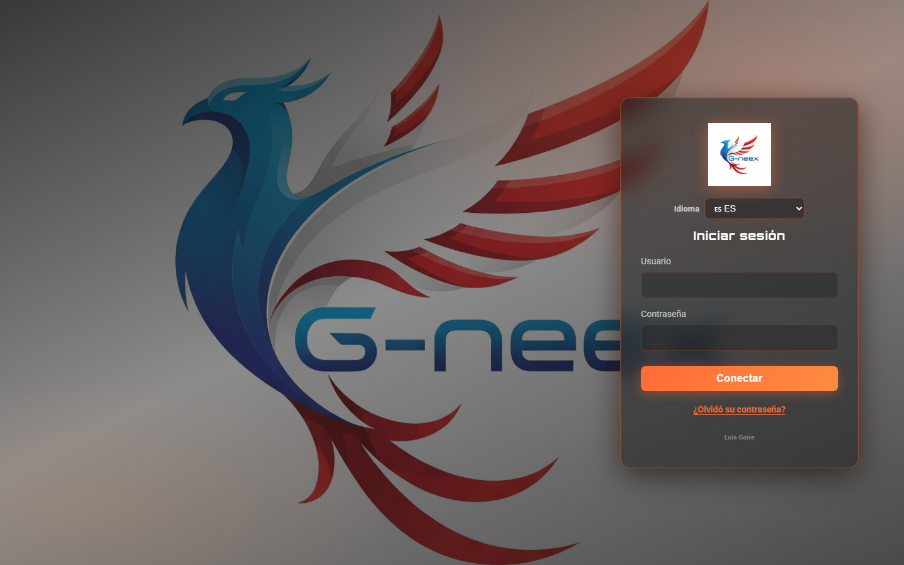
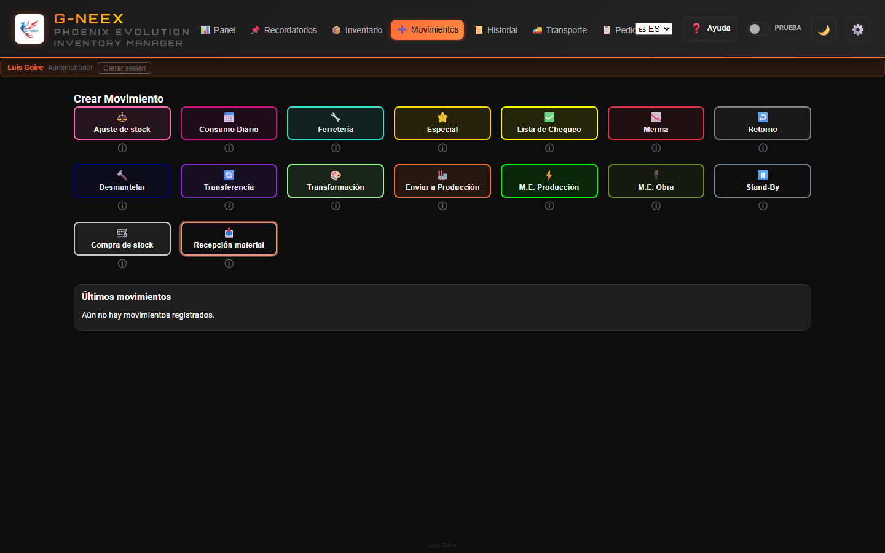
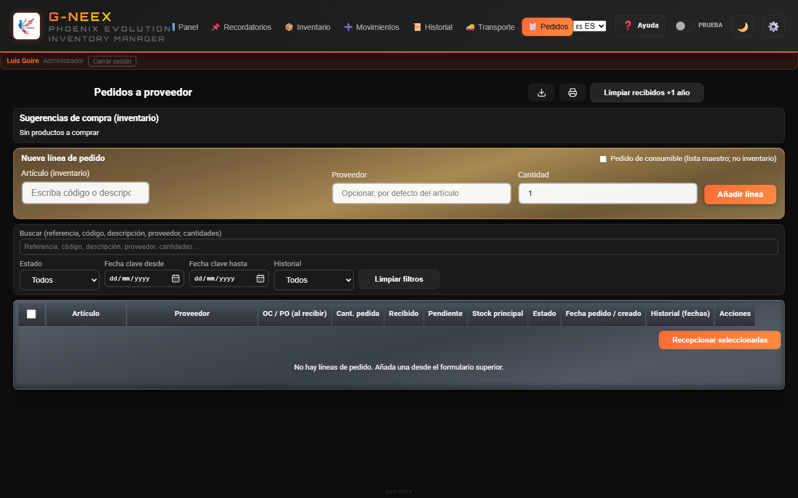
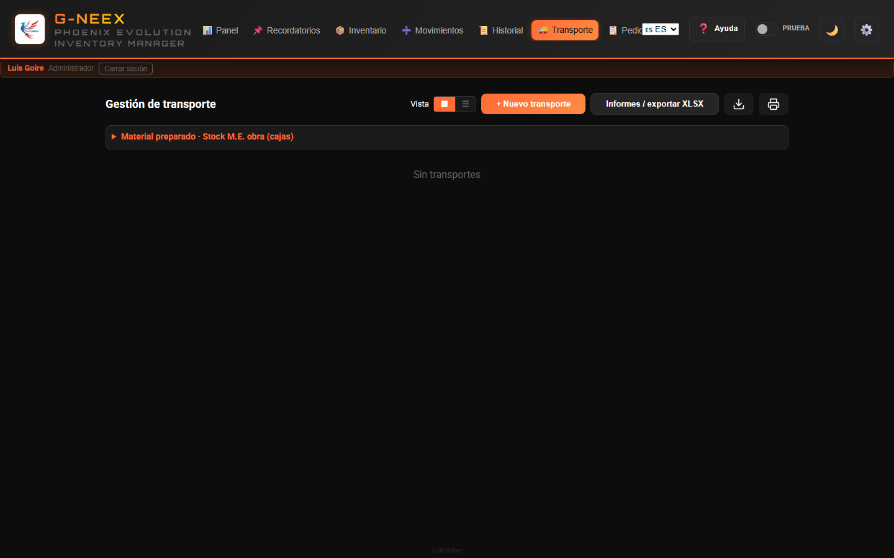
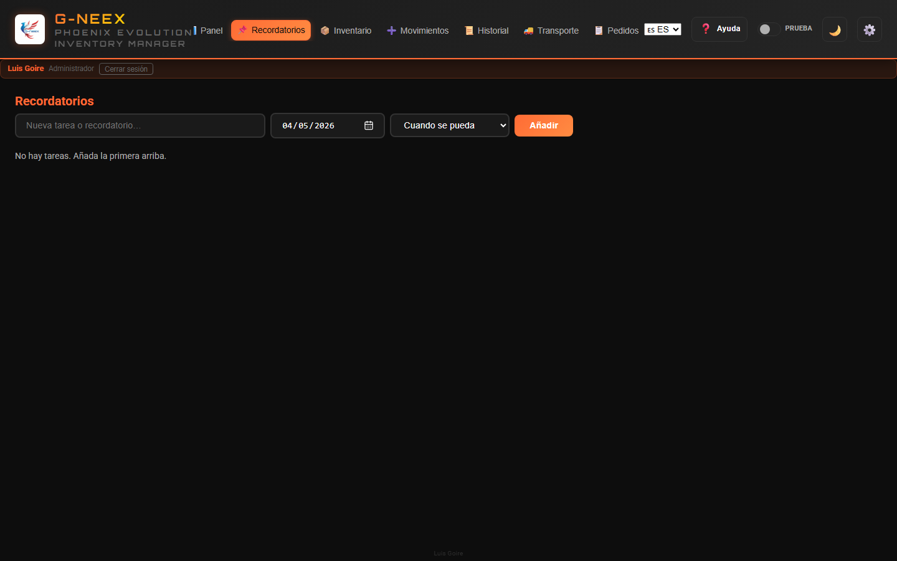

Sistema Integral de Gestión de Inventario y Logística
Desarrollo: Luis Goire — aficionado a la programación; en formación como programador.
Actualizado: mayo de 2026
G-NEEX
Antecedentes del proyecto
Necesidad industrial: control de inventario más estricto solo con un ordenador, sin otra infraestructura.
Origen Excel: hoja que creció con macros frente a la operativa diaria; evolución hacia un gestor integrado.
Aprendizaje: automatizar incidencias y, a la vez, consolidar programación y scripts.
Phoenix: tras un fallo grave y la recuperación del archivo, el nombre simboliza renacer; esa hoja es el ADN de G-NEEX.
Hoy: Phoenix en Excel sigue donde aporta valor hasta que G-NEEX sea plenamente operativa en web.
Más detalle en la app: ⚙️ Configuración → Antecedentes.
G-NEEX
El Problema
Las empresas de instalaciones eléctricas y proyectos industriales enfrentan desafíos diarios:
Descontrol de materiales — No se sabe qué hay en stock ni dónde está
Movimientos sin registro — Material que sale sin documentar quién, cuándo ni por qué
Transportes desorganizados — Checklists en papel, camiones sin seguimiento
Sin trazabilidad — Imposible rastrear el origen de una falta o exceso
Dependencia de internet — Sistemas en la nube que fallan cuando más se necesitan
G-NEEX
La Solución: G-NEEX
G-NEEX es una aplicación web que funciona 100% offline, directamente en el navegador, sin necesidad de servidores externos ni conexión a internet.
Datos en el navegador: inventario, movimientos y sesión se guardan en el almacenamiento local del navegador. Bloquee el equipo, use cuentas personales, exporte respaldos e importe JSON solo si confía en el origen.
Respaldo e Import/Export: la pestaña Import/Export y las operaciones críticas de respaldo están reservadas a la cuenta administrador; la elevación temporal de permisos no sustituye ese rol. Los fondos del inicio de sesión pueden rotar según assets/login-bg-manifest.json. Al importar JSON, las claves ausentes ya no borran datos locales inconexos.
Misma URL: use una dirección fija (p. ej. http://127.0.0.1:PUERTO/) y no mezcle file:// con HTTP.
Unidades de medida: el catálogo conserva la unidad reservada U; cada artículo puede tener unidad de stock o ninguna (sin asignación automática).
Gestiona todo el ciclo de vida del material:
Entrada → Almacén → Salida → Transporte → Obra

Pantalla de inicio de sesión
G-NEEX
Inventario en Tiempo Real
Pestaña Inventario (barra superior)
Función
Descripción
Vista completa
Tabla con código, descripción, categoría, stock Principal/Producción/Transformación, ubicación y fecha de expiración
3 stocks independientes
Principal, Producción y Transformación — cada uno con seguimiento propio
Búsqueda instantánea
Filtro en vivo por código, descripción, categoría o ubicación
Menú herramientas (⋮)
Primera opción Ocultar filtros en línea (flecha): cierra las barras caja / depósito / consumible; deshabilitada si ninguna barra está abierta. El menú ⋮ agrupa exportar, imprimir, filtros, stock a fecha, resúmenes, etc.
Filtro caja / ubicación
Selector: cajas BOX1… (texto Ubicación y gestión por caja), catálogo (E1R, ETOP, BIN 8, ARMOIRE…) y stock por ubicación en chips; chips en la tabla
Resumen por caja
Agrupación por caja inferida; en el modal, fila clicable (E1R, etc. se detectan además en el filtro y en las etiquetas)
Stock por caja operativo
Gestión real por artículo: alta/edición/baja de cajas, reparto entre cajas / prod. / transf. y transferencia de caja a ubicación directa (sin caja) con saldo por ubicación (E2R: 12); hoja unificada Datos (Codigo, Caja, UbicacionCaja, CantidadCaja, CantidadCajas, Vacia) para plantilla, exportación completa y reimportación
Alertas automáticas
Stock bajo, negativo, sobrestock y expiración próxima
Modal detalle stock bajo
Columnas: ignorar alerta, Acciones (🛒 lista de compra), Código, resto de campos
Modo a fecha
Consulta el inventario exactamente como estaba en una fecha seleccionada
Código de colores
Filas coloreadas según el estado del artículo para identificación visual inmediata
Exportar e imprimir
XLSX descargable (tabla con estilo) y vista de impresión formateada
G-NEEX
16 Tipos de Movimiento

Pestaña Movimientos — rejilla de tipos
G-NEEX soporta 16 tipos de movimiento que cubren todas las operaciones de un almacén industrial:
Categoría
Tipos
Operaciones diarias
Consumo Diario, Ajuste, Ferretería, Especial
Proyectos / Obra
Lista de Chequeo, M.E. Obra, M.E. Producción, Merma
Logística inversa
Retorno, Desmantelar
Producción
Enviar a Producción, Transformación, Transferencia
Abastecimiento
Compra de Stock, Recepción de Material
Planificación
Stand-By (borradores sin efecto hasta su liberación)
En la pestaña Movimientos, al pulsar un tipo se abre el formulario en una ventana superpuesta dentro de la aplicación (la cuadrícula de tipos sigue visible detrás).
En los tipos que restan inventario, la columna Origen stock permite elegir de qué depósito sale la cantidad: principal (Almacén general), cajas, ubicaciones (solo etiqueta en la lista), stock de producción y stock de transformación (con cantidad cuando aplica); la misma referencia puede ir en varias líneas con orígenes distintos. Si el formulario incluye columna Destino además del origen, el origen define el descuento físico y el destino puede ser distinto.
M.E. obra: las cantidades en cada línea son de inventario; al Procesar movimiento se introduce el total de cajas del envío (se distribuyen entre líneas según las cantidades).
Cada movimiento registra automáticamente:
Quién lo realizó
Cuándo se ejecutó
Stock anterior de cada artículo afectado
Justificación en caso de sobregiro
G-NEEX
Globos flotantes — Movimientos
Los accesos flotantes (por defecto abajo a la derecha) están ocultos hasta elegir el tipo en Movimientos:
Stand-by (⏸): lista rápida de borradores; panel, ir a Movimientos u ocultar (⏬).
Consumo diario (📅): panel de líneas pendientes hasta Procesar todo en un movimiento.
Arrastrar el botón circular para colocarlos en pantalla; la posición se guarda en este equipo. Un toque sin arrastre abre el panel.
Cierre automático: líneas ligadas al día local; recuperación si cambió el día o la app estuvo cerrada (sin forzar sobregiro por el flujo automático). Con Consumo diario seleccionado en Movimientos no se interrumpe el formulario (~23:00 / cambio de día); al pasar a otro tipo se aplica lo pendiente.
Fecha del movimiento (Consumo diario): cada línea guarda cuándo se añadió; al procesar, la fecha del movimiento es la del primer artículo del carrito (si faltara marca, hora de proceso).
Cantidades: como máximo cuatro decimales en pantalla y en valores guardados.
Destinatario «Otro»: escribir el nombre libremente cuando no esté en las listas del desplegable.
G-NEEX
Pedidos a proveedor

Pestaña Pedidos
Pestaña Pedidos: líneas vinculadas al inventario (proveedor, cantidad); el OC/PO se registra al recibir en Compra de stock.
Filtros: búsqueda de texto (referencia/código/descripción/proveedor/cantidades), estado, fecha clave (desde/hasta) e historial (con/sin recepción, con pedido, con anulación).
Estados: borrador → pedida → recepción parcial/total o cancelada; fechas para seguimiento.
Recepción: abre el mismo formulario Compra de stock que en Movimientos; se confirma con Procesar movimiento.
Si la compra se registra solo desde Movimientos y hay pedido pendiente del mismo artículo, diálogos Sí / No permiten vincular y actualizar el panel Pedidos (recibido, estado, acciones).
Exportar / Imprimir tabla: trabajan sobre la vista filtrada; hay limpieza masiva (+1 año) y eliminación por línea (>3 meses).
Referencias de movimiento: siglas del tipo + 6 dígitos correlativos por tipo (p. ej. AJU000001, COM000002); los datos antiguos con más dígitos se normalizan al cargar.
Recepción provisional: algunas categorías requieren PO y se gestionan como provisionales antes de impactar stock principal.
Fecha real de recepción (opcional): puede ser pasada para trazabilidad (notas/seguimiento), manteniendo la fecha/hora real de registro del movimiento.
G-NEEX
Vistas de listado
Pestaña Historial (mosaico / tabla / carrusel)
Historial, Transporte y Pedidos incluyen un selector Vista con disposición en mosaico (tarjetas o iconos), lista compacta y, donde aplica, tabla detallada; además, en Historial hay Carrusel cronológico para recorrer tarjetas en secuencia horizontal. Las tarjetas minimizadas muestran también el ID Proyecto cuando corresponde.
En Historial, los movimientos anulados en total o con anulado parcial muestran un sello diagonal (marco discontinuo inclinado); también hay filtro por tipo de anulación.
Fechas en pantalla (toda la app): día, mes en tres letras, año en cuatro cifras; con hora, 24 h hora local.
En Historial → Consumo diario por destinatario, la tabla permite editar destinatarios, guardar cambios y limpiar las filas visibles según filtros.
Adjuntos (📎) en el detalle de un movimiento y en el transporte expandido: enlazan archivos en cualquier carpeta del equipo (sin copiarlos a la app); se abren con Chrome/Edge. Los respaldos JSON no incluyen los archivos: en otro PC hay que volver a enlazar.
Imprimir en el detalle de un movimiento abre tablas (alineadas con la exportación XLSX), no la maqueta en pantalla.
Impresiones en A4 vertical; tablas sin columnas aplastadas por igual; código de artículo en una línea legible.
G-NEEX
Transporte Inteligente

Pestaña Transporte
El módulo de transporte automatiza la logística de envío a obra:
Creación automática — Los checklists y M.E. Obra generan transportes automáticamente
Multi-camión — Un proyecto puede tener múltiples transportes si la carga lo requiere
Panel visual — Tarjetas con estado, líneas y fecha de expedición
Expedición controlada — Solo se puede expedir cuando todas las líneas están resueltas
Creación manual — Para casos excepcionales sin checklist asociado
Historial completo — Registro de cada acción realizada sobre el transporte
Trazabilidad — Resumen en la pestaña Transporte (recepciones pendientes de expedir, líneas con cantidad en camiones activos, últimos expedidos, stock en empresa) más una lista manual editable por tipo de material y fase (en planta / camión / ya salió)
Reporte por camión — Cada camión permite Exportar o Imprimir una tabla con materiales, cantidades y dimensiones de la carga actual; con varios paquetes por línea, el XLSX y la impresión usan filas apiladas (columnas fijas Paquete, L, W, H), no muchas columnas horizontales.
G-NEEX
Dashboard — Visión General al Instante
Panel tras el inicio de sesión (pestaña Resumen)
Al iniciar sesión, un panel muestra el estado actual de la operación:
Indicadores visuales alertan si hay stock crítico o si el respaldo tiene más de 7 días.
G-NEEX
Recordatorios

Pestaña Recordatorios
Pestaña dedicada para recordatorios operativos con fecha objetivo y prioridad (según permisos del perfil)
Escalado automático de prioridades por antigüedad en días hábiles
Vista previa en dashboard con acceso rápido a recordatorios
Visibilidad: cada usuario solo ve los recordatorios que él creó (el respaldo JSON del equipo puede contener los de todos).
G-NEEX
Aplicación en pantalla (visión de uso)
Panel o dashboard: navegación a los módulos principales
G-NEEX organiza el trabajo en módulos con acceso directo desde la barra: inventario, movimientos, historial, transporte, pedidos, recordatorios y ajustes.
El administrador define usuarios en ⚙️ Configuración → Usuarios con plantillas genéricas o perfiles de referencia (mismo comportamiento que las cuentas integradas); la tabla PlantillasPermisos.xlsx.csv documenta cada clave.
El manual de usuario explica qué hace cada pantalla y flujo. Cómo se despliega o gobierna el acceso en su planta es un tema operativo; aquí se prioriza el uso cotidiano de la interfaz y las funciones de inventario.
G-NEEX
Reportes y Exportaciones
6 tipos de reporte en formato .xlsx (encabezado naranja, datos centrados en negrita, anchos de columna) con nombres descriptivos:
Resumen de transportes
Líneas de transporte detalladas
Movimientos filtrados (respeta filtros activos)
Líneas de movimientos filtrados
Todos los movimientos
Consumo por artículo específico
Los archivos incluyen rango de fechas en el nombre:
GNEEX_All_Movements_2024-03-15_to_2026-04-15.xlsx
Recepciones (Configuración): exportación e impresión de la lista filtrada con el mismo criterio de paquetes en filas que el reporte de carga.
Consumibles: marcar un artículo como consumible de inventario en el editor y guardar añade su nombre a Configuración → Consumibles; al desmarcar, se quita de la lista si coincidía.
G-NEEX
Protección de Datos
Función
Descripción
Respaldo completo
Exporta toda la base en un JSON (inventario, movimientos, destinatarios plantilla y ocasionales, etc.)
Restauración
Importa un respaldo previo y restaura todo el sistema
Archivar movimientos
Exporta movimientos antiguos y los elimina para liberar espacio
Reimportar archivos
Reintegra movimientos archivados sin duplicar datos
Export / fusión solo movimientos
Exporta solo el historial de movimientos; la fusión añade ids nuevos y aplica stock (sin pisar toda la base)
Inventario inicial
Carga masiva mediante CSV o XLSX y plantilla .xlsx con columnas y estilo correctos
Alerta de respaldo
El dashboard avisa si hace más de 7 días sin respaldo
G-NEEX
Multilenguaje y Personalización
3 idiomas completos
Español
English
Français
2 temas visuales
Modo oscuro
Modo claro
Modo demostración (opcional)
Interruptor Prueba: tema azul y uso normal de la app; al desactivar se restaura el estado de datos anterior y se pierden los cambios de la demostración
Tema claro/oscuro e idioma no se revierten
Confirmación al salir; banda informativa bajo el encabezado
Diseño responsive
Se adapta a pantallas de escritorio, tablet y móvil
Textos optimizados sin saltos de línea innecesarios
Tipografía profesional (Roboto + Orbitron)
G-NEEX
Especificaciones Técnicas
Aspecto
Detalle
Tecnología
HTML5, CSS3, JavaScript (vanilla)
Almacenamiento
localStorage del navegador
Conexión
No requiere internet ni servidor
Instalación
Abrir index.html en cualquier navegador moderno
Compatibilidad
Chrome, Edge, Firefox, Safari
Referencias
Código tipo siglas + 6 dígitos por tipo (AJU…, COM……); datos antiguos se normalizan
Varios equipos
Cada navegador guarda sus datos; no se comparten solo por abrir la misma URL
Dependencias externas
Fuentes web opcionales; exportación XLSX con xlsx-js-style en vendor/